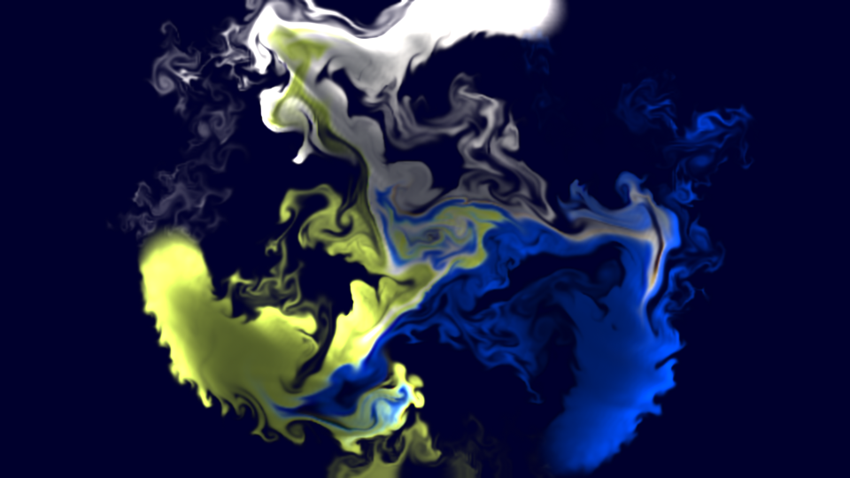
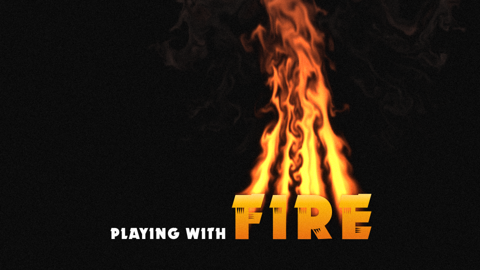
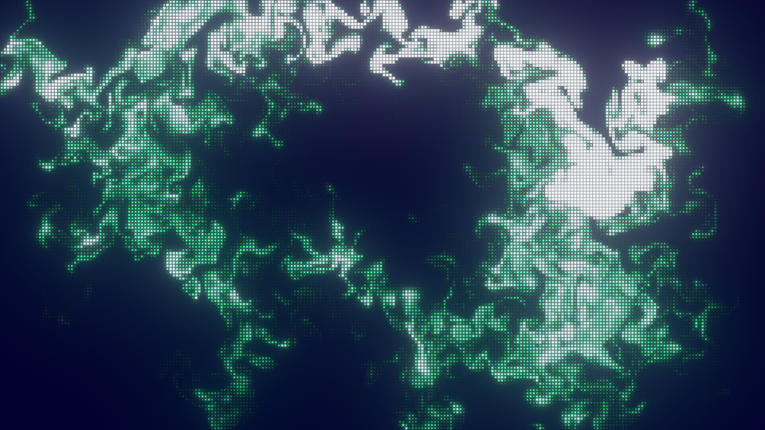
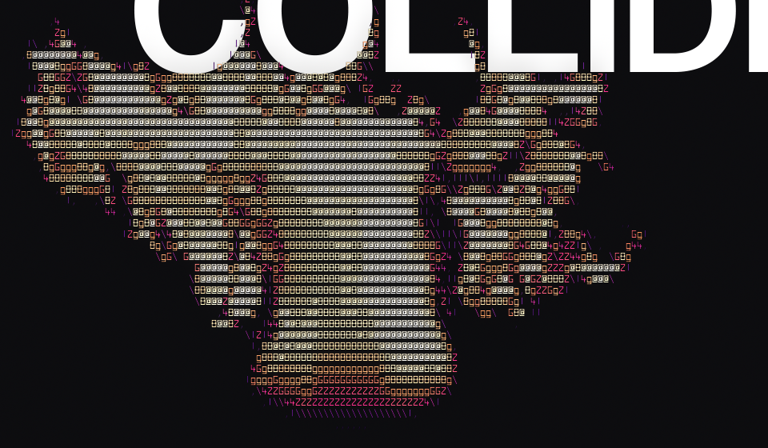
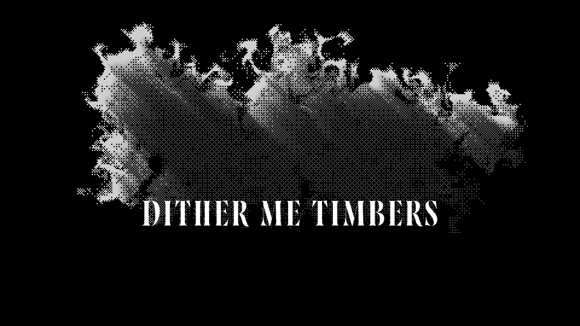

FLUIDLAB
Simulate smoke and fire inside After Effects
FluidLab allows you to simulate 2D smoke and fire inside of After Effects. Just apply the FluidLab effect to a layer, assign fuel, collision, and light layers, and watch it flow. Everything is keyframable, and it animates fast on the CPU, or optionally on GPU.





- FAST 2D Smoke Simulation inside After Effects
- Simulate fire as well
- Turn on collisions to interact with the smoke
- Turn on the optional lighting system and add depth to your smoke
- Use the built-in FluidLab 2D lights, or native After Effects lights
- Customize your smoke with built-in style effects including ASCII, Grid, Flow, Dither, and more
- GPU-accelerated for fast simulations
- Install — run the installer for your system. It needs an administrator password, since After Effects plug-ins live in a shared folder.
- Start (or restart) After Effects.
- Make a solid the size of your comp, then apply Effect → FluidLab → FluidLab. Smoke starts from the built-in emitter right away.
- Choose your layers under Fuel 1–3, Collision, and Burst 1–2. The layers you pick can stay hidden.
The installers aren't signed yet
macOS: if the installer says it
can't be opened, right-click it and choose Open. On macOS
15 and later, open System Settings → Privacy & Security
instead and click Open Anyway.
Windows: if SmartScreen says it protected your PC,
click More info, then Run anyway.
The plug-in installs to
/Library/Application Support/Adobe/Common/Plug-ins/7.0/MediaCore/FluidLab
on macOS and
C:\Program Files\Adobe\Common\Plug-ins\7.0\MediaCore\FluidLab
on Windows. To uninstall on macOS, delete that folder; on Windows,
use Settings → Apps.
After Effects on macOS 12 or later (Apple Silicon or Intel) or 64-bit Windows. Developed and tested on After Effects 2026; earlier versions haven't been tested. The Windows version is newer and has had less testing; its GPU mode (DirectX 11, which needs a GPU with feature level 11.1) is new in 0.1.31. Everything runs locally: no accounts and no network calls.